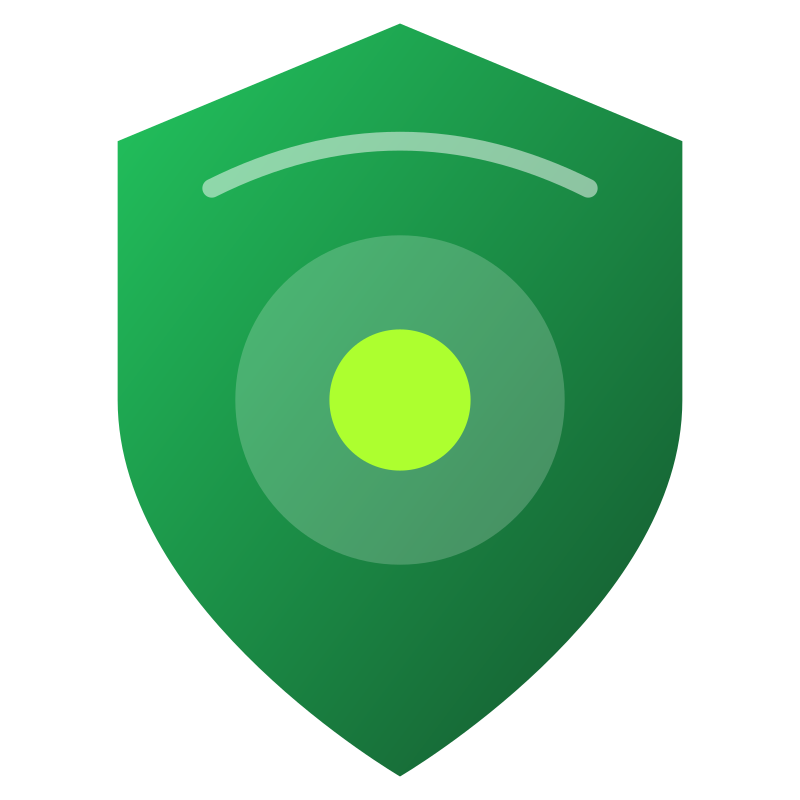

Block third-party cookies
Cross-site cookies are blocked by default, cutting down a common way ad networks and embeds follow you between sites.

Tungsten Download v0.11Private browsing that feels native
A Mac browser for people who want modern websites to work, pages to stay fast, and privacy controls that live in the app instead of a pile of extensions.
Why Tungsten exists
Too many privacy-first browsers ask for the same compromise: slower pages, broken web apps, unfamiliar UI, or a chain of plugins you are supposed to trust.
Chrome is compatible, but it is not built around native Mac conventions or user-first privacy. Tungsten takes a middle route: keep Chromium compatibility, expose the privacy switches, and make normal, private, and Tor tabs easy to see.
New privacy controls
Cross-site cookies are blocked by default, cutting down a common way ad networks and embeds follow you between sites.
WebRTC is restricted so calls and media features do not quietly expose local network routes when they do not need to.
Tungsten blocks uncommon high-entropy signals such as local font enumeration, sensors, idle detection, notification prompts, and ad attribution APIs.
Built-in request blocking can stop common ad and tracker traffic without asking users to trust a separate extension. It stays off by default.
For stricter sessions, users can disable WebGL, remote fonts, JavaScript clipboard access, or local storage when compatibility matters less than exposure.
The default start page now goes to Duck AI, and address-bar answers can use DuckDuckGo AI or Google AI from Settings.
Tor tabs use a separate Chromium context routed through Arti’s SOCKS proxy, with clear tab color so the browsing mode is visible at a glance.
Core directives
Content blocking, cookie rules, WebRTC protection, and privacy modes should be part of the product, not a chain of third-party extensions you have to vet and trust.
Compatibility matters. A private browser that breaks the daily sites people use for work, banking, and media becomes shelfware.
Normal, private, and Tor tabs should be obvious choices, not hidden states buried in a menu. Tungsten color-codes the favicon so mode is visible without wasting tab space.
How it differs
Plugins can help, but every one adds another party to trust. Tungsten keeps core privacy behavior inside the browser.
Fingerprint resistance can break sites when it gets too aggressive. Tungsten uses safer defaults, then exposes stricter controls for sessions that need them.
A browser people keep open all day should behave like a Mac app, not like a web app in a desktop frame.
Pinned release
Download the versioned DMG from GitHub Releases. This build is for Apple silicon Macs and includes the bundled Arti runtime for Tor tabs.
xattr -dr com.apple.quarantine /Applications/Tungsten.app